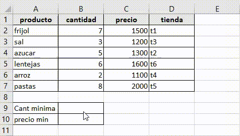

La ofimática es el conjunto de métodos, aplicaciones y herramientas informáticas que se usan
en labores de oficina con el fin de perfeccionar, optimizar, mejorar el trabajo y operaciones
relacionados.La palabra ofimática es un acrónimo compuesto de la siguiente manera ofi (oficina)
y mática (informática).
Excel es una hoja de cálculo, un programa informático dessarrollado
por la empresa Microsoft y que forma parte de Office que es una
suite ofimática. Pertenece a la categoría de programas informáticos
conocidas como hojas de cálculo.
Las hojas de cálculo fueron desarrolladas desde la década de 1960
para simular las hojas de trabajo contables de papel y de esa manera
ayudar en la automatización del trabajo contable.
Excel se distingue de todos los programas ofimáticos porque
nos permite trabajar con datos numéricos. Con los números
que almacenamon en Excel podremos realizar cálculos aritmé-
ticos básicos y también podremos aplicar funciones matemá-
ticas de mayor complejidad, o utilizar funciones estadísticas.
Exel nos facilita en gran medida el trabajo con números y nos
permite analizarlos facilmente y generar reportes con herra-
mientas como los gráficos y las tablas dinámicas.
Una función es una operación predefinida por Excel que opera sobre uno o más valores en
un determinado orden. En Excel las fórmulas pueden utilizar funciones. Esto es, que las
fórmulas incluyen en su operación funciones para obtener el resultado que estamos buscando.
Es la función más sencilla que ofrece Excel.
Se aplica utilizando la expresión =SUMA(B2:B7),
en este caso considerando que se quiere obtener
el total que suman las celdas seleccionadas
(de la B2 a la B7).
Además de una selección seguida de filas o
columnas, esta función de Excel permite agregar
números extras, celdas individuales o incluso más
de un intervalo de celdas siempre y cuando se utilice
una separación de cada dato con el signo punto y coma (;). Por ejemplo, al utilizar la expresión =SUMA(100;B2:B7;B10:B15), Excel calculará la suma del conjunto de datos de las celdas B2 a la B7,
del conjunto de datos de las celdas B10 a la B15 y agregará un monto de 100.

La función MIN nos devuelve el valor mínimo
de una lista de valores omitiendo los valores
lógicos y el texto. Como argumentos de la fun-
ción podemos ingresar directamente los núme-
ros que deseamos evaluar o podemos indicar
una referencia a una celda o el rango que con-
tiene los valores numéricos.
La función CONTAR cuenta la cantidad de celdas
que contienen números y cuenta los números den-
tro de la lista de argumentos. Use la función
CONTAR para obtener la cantidad de entradas en
un campo de número de un rango o matriz de nú-
meros. Por ejemplo, puede escribir la siguiente fór-
mula para contar las celdas en el rango B2:B7: =CONTAR(B2:B7). En este ejemplo, si cinco de
las celdas del rango contienen números, el resultado
es 5, pero 6 contienen numeros.
Use CONTAR.SI, una de las funciones esta-
dísticas, para contar el número de celdas
que cumplen un criterio; por ejemplo, para
contar el número de veces que una ciudad de-
terminada aparece en una lista de clientes.
En su forma más sencilla, CONTAR.SI indica lo
siguiente:
=CONTAR.SI(¿Dónde quiere realizar la bús-
queda y qué quiere buscar?
Por ejemplo:
=CONTAR.SI(B2:B7,">3")
La función CONTAR.SI.CONJUNTO aplica
criterios a las celdas de varios rangos y cuenta
el número de veces que se cumplen todos los
criterios.
Use BUSCARV cuando necesite bus-
car elementos en una tabla o en un
rango por fila. Por ejemplo, busque
un precio de una parte de Automotive
por el número de pieza o busque un
nombre de empleado basándose en su
identificador de empleado.
En su forma más simple, la función
BUSCARV indica lo siguiente:
= BUSCARV (según lo que desee buscar, el número de columna del rango que contiene el valor
que se devolverá, devolverá una coincidencia aproximada o exacta, indicada como 1/verdadero
o 0/falso).
La función COINCIDIR busca un elemento deter-
minado en un intervalo de celdas y después devuel-
ve la posición relativa de dicho elemento en el rango.
Por ejemplo, si el rango A1:A3 contiene los valores
5, 25 y 38, la fórmula =COINCIDIR(25,A1:A3,0)
devuelve el número 2, porque 25 es el segundo
elemento del rango.
Primer periodo
subir